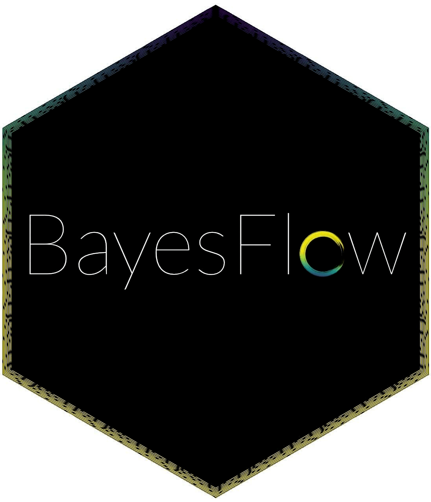

Open Source Software
In addition to doing research and managing a lab, I am deeply involved in open source software development. While I mostly program in R myself, my lab uses a flexible combination of R, Python, and C++. I also hope to add Julia to the list soon. Below, you can find an overview of my most important open source software contributions.
brms

brms: Bayesian Regression Models Using Stan
My role: Lead author and maintainer
Links: Website, GitHub, Forums, Blog-Posts
brms is an R package to fit Bayesian generalized (non-)linear multilevel models using Stan. The formula syntax provides a powerful combination of intuitiveness and flexibility. A wide range of response distributions are supported, allowing users to fit many differents kinds of models including linear, robust linear, count data, survival, response times, ordinal, zero-inflated, and even self-defined mixture models all in a multilevel context. Further modeling options include theory- and data-driven non-linear functions, auto-correlation structures, censored data, missing value imputation, and quite a few more. In addition, all parameters of the response distribution can be predicted in order to perform distributional regression. Multivariate models (i.e., models with multiple response variables) can be fit as well. Prior specifications are flexible and explicitly encourage users to apply prior distributions that actually reflect their knowledge. Model fit can easily be assessed and compared with posterior predictive checks, cross-validation, and Bayes factors.
References:
- Bürkner P. C. (2021). Bayesian Item Response Modelling in R with brms and Stan. Journal of Statistical Software. doi:10.18637/jss.v100.i05
- Bürkner P. C. (2018). Advanced Bayesian Multilevel Modeling with the R Package brms. The R Journal. doi:10.32614/RJ-2018-017
- Bürkner P. C. (2017). brms: An R Package for Bayesian Multilevel Models using Stan. Journal of Statistical Software. doi:10.18637/jss.v080.i01
Stan

Stan is a state-of-the-art platform for statistical modeling and high-performance statistical computation. Thousands of users rely on Stan for statistical modeling, data analysis, and prediction in the social, biological, and physical sciences, engineering, and business. Users specify log density functions in Stan’s probabilistic programming language and get full Bayesian statistical inference with MCMC sampling as well as access to other inference algorithms. Stan’s math library provides differentiable probability functions & linear algebra (C++ autodiff). Additional R packages provide expression-based linear modeling, posterior visualization, Bayesian cross-validation, and much more.
Stan interfaces with the most popular data analysis languages (R, Python, Julia) as well as the command line. It runs on all major platforms (Linux, Mac, Windows). Stan is freedom-respecting, open-source software (new BSD core, some interfaces GPLv3). Stan is associated with NumFOCUS, a nonprofit supporting open code and reproducible science, through which you can help support Stan.
References:
- Stan Development Team (current year). Stan Modeling Language Users Guide and Reference Manual (current version). https://mc-stan.org
- Carpenter B., Gelman A., Hoffman M. D., Lee D., Goodrich B., Betancourt M., Brubaker M., Guo J., Li P., and Riddell A. (2017). Stan: A probabilistic programming language. Journal of Statistical Software. doi:10.18637/jss.v076.i01.
BayesFlow

BayesFlow: Amortized Bayesian Workflows With Neural Networks
My role: Development team member
Links: GitHub
BayesFlow is a Python library for efficient simulation-based Bayesian Inference. It enables users to create specialized neural networks for amortized Bayesian inference, which repays users with rapid statistical inference after a potentially longer simulation-based training phase. A cornerstone idea of amortized Bayesian inference is to employ generative neural networks for parameter estimation, model comparison, and model validation when working with intractable simulators whose behavior as a whole is too complex to be described analytically.
Both the BayesFlow library itself and its community are quickly growing. Our goal is to make it the gold-standard simulation-based inference library within the next couple of years.
References:
- Radev S. T., Schmitt M., Schumacher L., Elsemüller L., Pratz V., Schälte Y., Köthe U., & Bürkner P. C. (2023). BayesFlow: Amortized Bayesian Workflows With Neural Networks. ArXiv preprint.
- Elsemüller L., Schnuerch M., Bürkner P. C., & Radev S. T. (2023). A Deep Learning Method for Comparing Bayesian Hierarchical Models. ArXiv preprint.
- Radev S. T., Schmitt M., Pratz V., Picchini U., Köthe U., & Bürkner P. C. (2023). JANA: Jointly Amortized Neural Approximation of Complex Bayesian Models. Uncertainty in Artificial Intelligence (UAI) Conference Proceedings.
- Schumacher L., Bürkner P. C., Voss A., Köthe U., Radev S. T. (2023). Neural Superstatistics: A Bayesian Method for Estimating Dynamic Models of Cognition. Scientific Reports. Available for free also on ArXiv. doi:10.1038/s41598-023-40278-3
- Schmitt, M., Bürkner P. C., Köthe U., & Radev S. T. (2023). Detecting Model Misspecification in Amortized Bayesian Inference with Neural Networks. Proceedings of the German Conference on Pattern Recognition (GCPR).
- Radev S. T., D’Alessandro M., Mertens U. K., Voss A., Köthe U., & Bürkner P. C. (2021). Amortized Bayesian Model Comparison with Evidental Deep Learning. IEEE Transactions on Neural Networks and Learning Systems. Available for free on ArXiv. doi:10.1109/TNNLS.2021.3124052
- Radev S. T., Wieschen E. M., Voss A., & Bürkner P. C. (2020). Amortized Bayesian Inference for Models of Cognition. International Conference on Cognitive Modelling (ICCM) Conference Proceedings.
- Radev, S. T., Mertens, U. K., Voss, A., Ardizzone, L., & Köthe, U. (2020). BayesFlow: Learning complex stochastic models with invertible neural networks. IEEE Transactions on Neural Networks and Learning Systems. Available for free on ArXiv. doi:10.1109/TNNLS.2020.3042395
Other Software
Lead author of
- thurstonianIRT: Fit Thurstonian IRT models in R [GitHub]
Author of
- ggsimplex: Simplex visualizations with ggplot2 [GitHub]
- bayesim: Simulations for Bayesian models [GitHub]
- bayeshear: Metrics for evaluating Bayesian models [GitHub]
- bayesfam: Custom families for brms [GitHub]
- bayesian: An interface from brms to tidymodels [Website, GitHub]
Contributed to:
- emmeans: Estimating marginal means [GitHub]